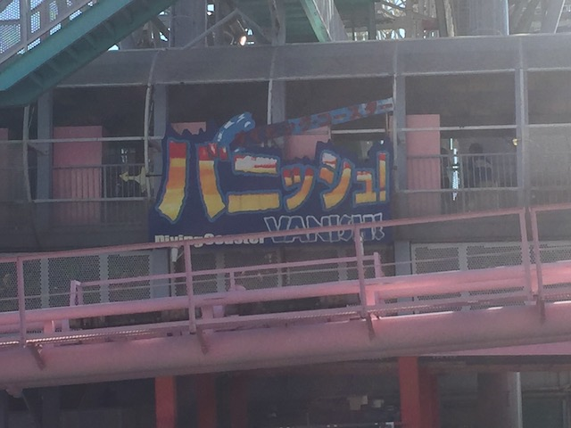

| |
Yokohama Cosmoworld Review

Yokohama Cosmoworld is....a fun little park. Yeah, it's a small little park, but it's also a very well known park. You may think you don't know about Yokohama Cosmoworld, and you may not know about the name. But if you saw a photo of this place, you'd probably say "Oh yeah! I recognize that place!". Cause yeah. This place is essentially the Santa Monica Pier of Japan. And I mean that in damn near every way. OK. Yokohama Cosmoworld is a bigger park, no doubt about that. But the atmosphere of the two parks is pretty similar. Both of them are small little parks that seem to be places for couples to go on dates. Both are most well known for a single big roller coaster. Especially this place. I don't want to give too much away since....there's a review of that ride down below. But needless to say, let's just say that this rides bark is worse than its bite. And of course, it's right smack dab in the middle of Yokohama, right by the ocean, much like the Santa Monica Pier is. Now granted, Yokohama is MUCH better than Santa Monica, and Yokohama Cosmoworld is a better park. I mean, it's not huge. If anything, this place is honestly just a credit whore stop. But it still is a fun little park with a bit to do, read the rest of the review to see what all this fun little park has to offer.
Rollercoasters
There is a link to a review of all the Rollercoasters at Yokohama Cosmoworld.
Top Coasters
Vanish: Dive Coaster Review

Family Coasters
Spinning Coaster Review

Kiddy Coasters
Family Banana Coaster Review

Flat Rides
Here are all of the flat rides at Yokohama Cosmoworld. Now because this park is a pay-per-ride park with no unlimited wristband option, I never bothered with any of the flat rides here. That's because....none of the flat rides here look like anything special. It seems like everything here, you can ride at other parks. Let's start out by going over their most famous flat ride. Cosmo Clock 21. The ferris wheel? Yes. You see, this ferris wheel is actually one of the landmarks of Yokohama, along with the Yokohama Landmark Tower, which was once the tallest building in Japan, and the Cosmo Clock 21 was also at one point, the tallest ferris wheel in Japan. The ride is popular enough that it has its own Wikipedia Page and is included in the famous Ferris Wheels section. Plus, the view of Yokohama simply has to be amazing. I love walking around the city. So surely looking down on the city from the ferris wheel would be really cool. Moving onto their non-famous flat rides. Let's start out with Super Planet, which is a Huss Enterprise. These are fun rides, hopefully this one runs a good program. They also have a Disk-O, a pirate ship, some funky flat ride that looks fun, but not very good, a maze, a carousel, and a Rockin' Tug.
 One of the most famous ferris wheels in Japan, and its up there worldwide.
One of the most famous ferris wheels in Japan, and its up there worldwide.
Dark Rides
So Yokohama Cosmoworld has....at least one dark ride. I never rode it due to the pay-per-ride park, but....it seems....all right. From what I heard, it's literally just called Shooting Dark Ride. Sounds vauge and generic. Maybe there's some cool stuff in there that you just can't tell since they don't translate it for foreigners. That's the only for sure dark ride. But depending on how loose your dark ride definition is, you could definately have more options. For instance, they have one of those walk-through haunted houses. Some may not count that as a dark ride, but just in case you do, they have one here. I don't really know too much about it, but...it looks cool and fun. I know those Japanese haunted houses are fantastic! And from looking at the photos of the one here, it seems to have the candle you have to keep upright. I never did one of those, but I am interested in those. Eh. Probably should've done it in hindsight. Meh. Oh well.
Water Rides
There is one water ride at Yokohama Cosmoworld. And....this is a well known one. Their log flume gets talked about a lot. To the point where despite being a pay-per-ride park, I had to ride it and see if it lived up to the hype. Cliff Drop. Now this log flume may not look like anything special, but it had a really good reputation. Specifically that this log flume was really fast and even had some ejector air. Hmm. Intriguing. A log flume with airtime. I must investigate and see for myself. And....nope. Sorry, the hype is totally wrong on this one. Now don't get me wrong. It's still a decent log flume. The final drop, while not having any airtime, is still pretty good. And the view you get of the park is pretty good. Also, this ride has a scream-o-meter that measures how loud your screams are. If you're with a group who likes to act silly, then it's something to have fun with. But since I NEVER scream on rides (it's gonna take cliff jumping to make me scream. Yeah. It's not gonna crack the Top 10 Water Rides any time soon, but if water rides are your thing, then it's definately worth checking out.
May not be as good as the hype, but still a good log flume.
Dining
While Yokohama Cosmoworld itself doesn't have any dining options, it doesn't need to have any. It's a small park, and on top of that, it's right in the middle of the city. There are all sorts of dining options nearby. I don't want to name all the options you have in the area since....there's simply too many to count. So I'm just gonna go over the two I ate at (I went to Yokohama twice, but the park was closed the first time). For my American meal, I had Shake Shack. I like Shake Shack a lot, one of the better burger fast food chains. And while Shake Shack isn't super popular in that you can find it anywhere, there are a couple of Shake Shacks in SoCal. I just rarely eat at them, so I just decided "SCREW IT!! I WANT SHAKE SHACK!!!". Good burgers, and of course, really good shakes. There's also a Hard Rock Cafe here, but I never ate there. But if you're the person who counts Hard Rock Cafe credits, here you go. But moving onto the local place. I also had some sushi while in Yokohama. OK, after looking it up, there's actually a Kaiten Sushi in Santa Ana. Which...is interesting. Will have to try that sometime to compare. It was a pretty good Sushi place. Fun fact, this is one of those conveyer belt Sushi places. Wish I got a photo of that and put it in the update. The Crab Roll was good. The avacado roll, not so much (Roe isn't very good).
 Not the biggest Sushi fan, but this was good.
Not the biggest Sushi fan, but this was good.
Theming and Other Attractions
Here are the reviews of all the other stuff at Yokohama Cosmoworld. Well, as far as theming goes, there's NONE!!! This is a completely bare-bones amusement park. But that's OK. Because while there's no theming, the park setting is FANTASTIC!!! No really. The whole reason people go to this park is literally for the atmosphere. No really. This is one of the best park settings ever! The reason Vanish is so famous is not just because of its famous water tunnel, but also because the Yokohama area is just a fantastic area to walk around in. I think its all the famous landmarks right around you. For instance, the Yokohama Landmark Tower, as well as just...Yokohama in general. This city is just great to explore and look around. As such, the park itself doesn't have a whole lot else. I know they have an Ice House, since those things are damn near mandatory at Japanse theme parks. But unless you count walk-throughs as miscellanious, then there's really not a whole lot to do. But that's because again, you don't need a ton in the park. You're right in Yokohama. They have a really good art museum right nearby. And if Yokohama isn't enough, Tokyo is a short train ride away, and there's so much to do there.
 Love the area of Yokohama.
Love the area of Yokohama.
In Conclusion
Yokohama Cosmoworld is a fun little park. I'm not going to lie. Looking at all the parts of this park individually, this seems like a fun little place. But nothing special. I mean, none of the roller coasters are anything special. Vanish is overrated, the Mouse is pretty lame, the log flume is also overrated, and none of the other rides are anything special. Yeah. The rides themselves aren't anything special. But that's not the reason people go to Yokohama Cosmoworld. OK, they might go for Vanish since that ride is famous for its water tunnel. But even so, what really drives people to Yokohama Cosmoworld is just the fact that this park is right in the heart of Yokohama. It's incredibly easy to get to. No really. If you know what station to get off at, then Yokohama Cosmoworld is an INCREDIBLY accessible theme park. I'm pretty sure if you're stopping in Yokohama on a cruise, then it's incredibly easy to get there. There's a ton of stuff to do around the park. Some malls, a lot of great resteraunts, a couple cool museums, and just the entire area of Yokohama, particuarly the area of Minato Mirau 21, the business and tourist area that Yokohama Cosmoworld is part of. That is a great area totally worth visiting. And if you're a coaster enthusiast in the area, then you might as well get the credits while here. =P
Enthusiast FAQs.
*Are there kiddy coaster restrictions? - Nope. You can ride the Family Banana Coaster.

Tips
*This is a pay-per-ride park, so budget what you want to ride in advance.
*The park is split into two. Most of the rides are in the front half, but all the major rides are in the back half. Enjoy the walk between the two halves.
*Check out the rest of Yokohama.
*Have Fun!
Theme Park Category:
Small Park
Location
Yokohama, Kanagawa, Japan
Last Day Visited
November 14, 2018
Video
I unfortunetly did not shoot enough video to make a Yokohama Cosmoworld video.
Complete Update List
2018
JAPAN 2018!!! =)
Here's a link to the parks website (All Japanese).
Home
|